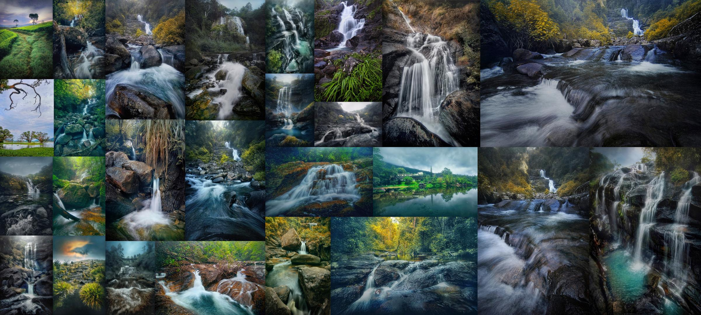

Tips for Capturing Stunning Landscape Photos
Landscape photography is a popular genre among photographers, offering endless opportunities to capture breathtaking scenes of nature. Whether you're exploring vast mountain ranges, tranquil lakes, or rolling hills, here are some tips to help you capture stunning landscape photos.
1. Use a Wide-Angle Lens: A wide-angle lens allows you to capture more of the scene, making it ideal for landscape photography. It helps create a sense of depth and scale in your images.
2. Pay Attention to Composition: Composition plays a crucial role in landscape photography. Look for interesting elements such as leading lines, foreground interest, and balanced compositions to create compelling images.
3. Consider the Lighting: The quality of light can make or break a landscape photo. Golden hour, which occurs during sunrise and sunset, offers soft, warm light that enhances the beauty of the landscape. Pay attention to the direction and intensity of light when composing your shots.
4. Experiment with Different Perspectives: Don't be afraid to get creative with your compositions. Try shooting from different angles and perspectives to add variety to your photos.
5. Edit Thoughtfully: Post-processing can enhance your landscape photos, but it's essential to edit them thoughtfully. Avoid over-processing and aim for a natural look that accurately reflects the scene you captured.